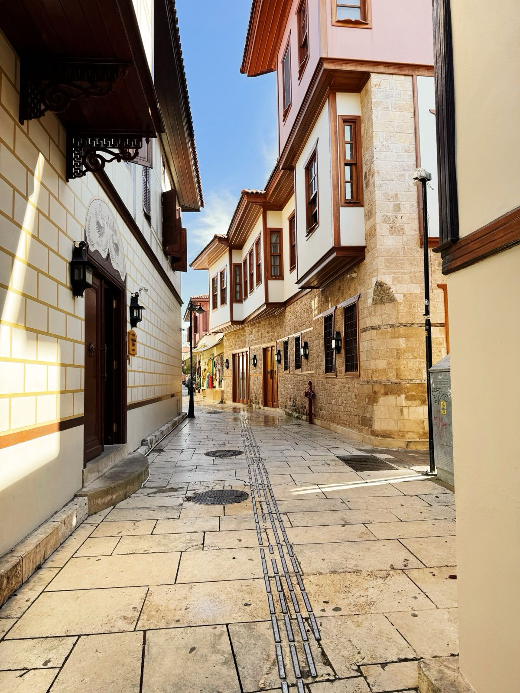
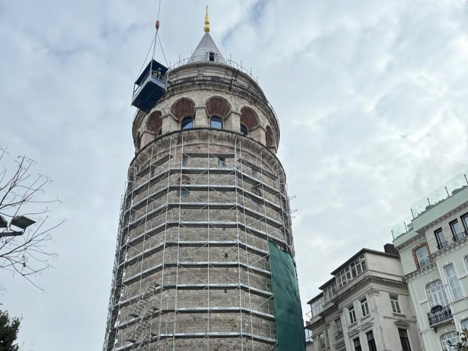
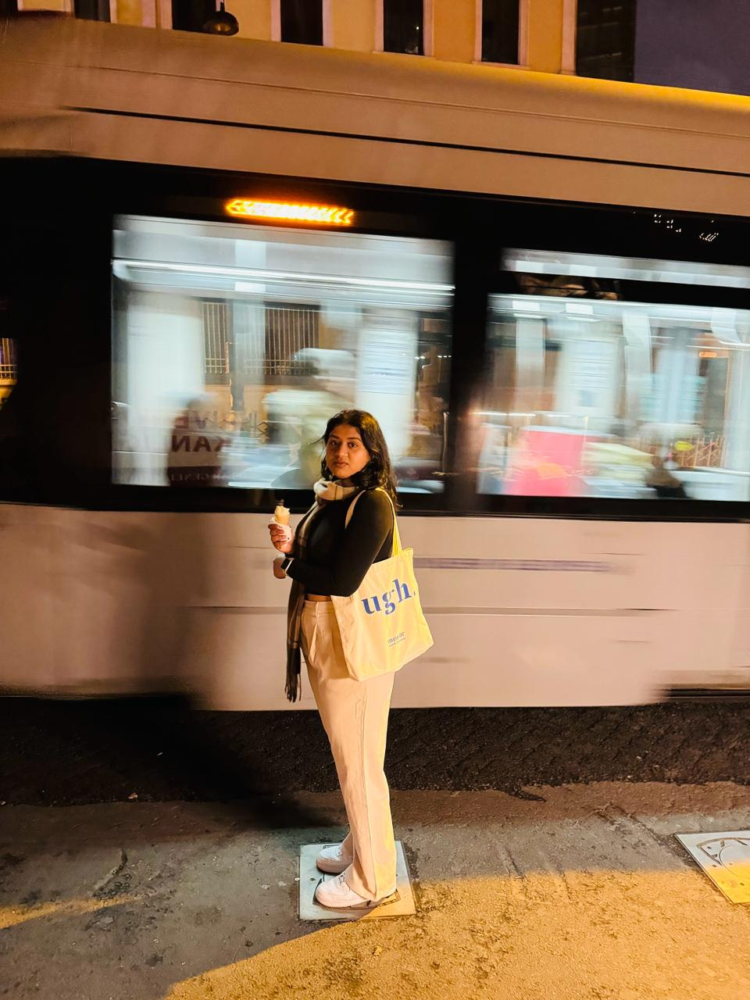
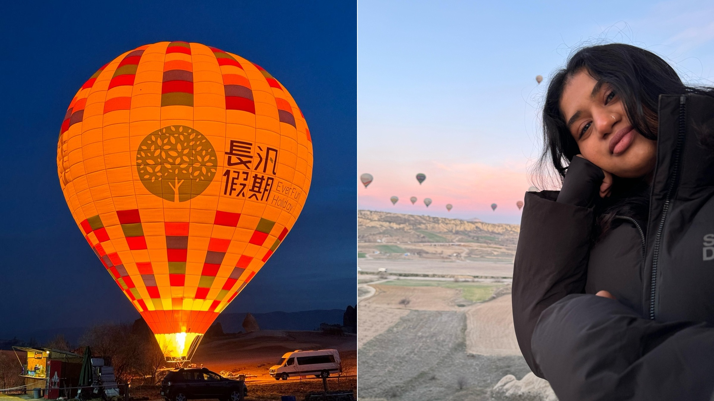
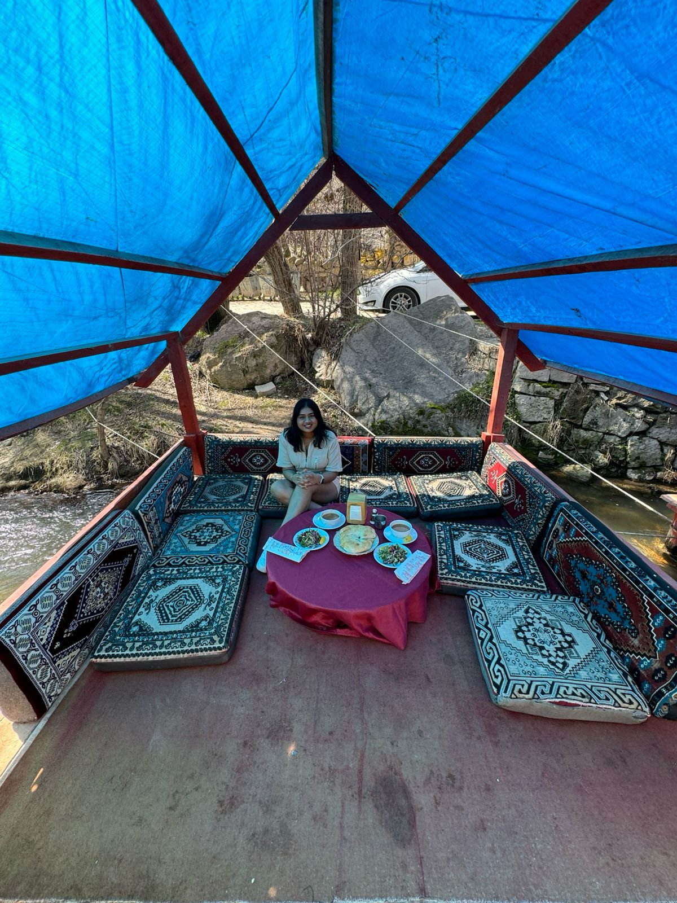
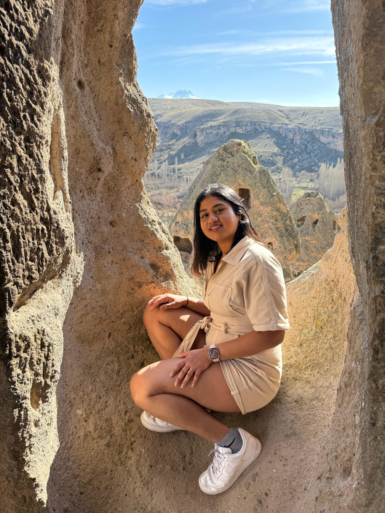
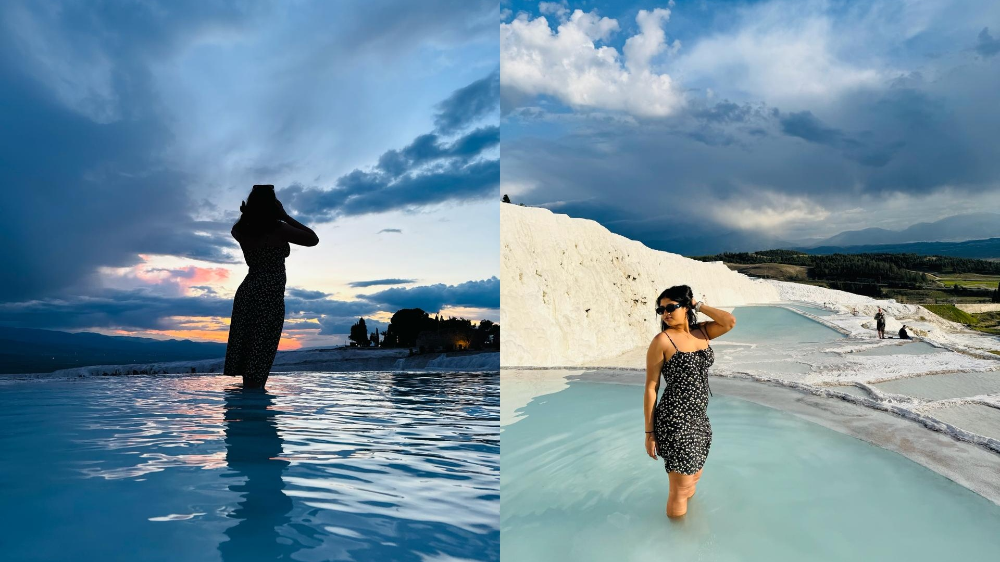
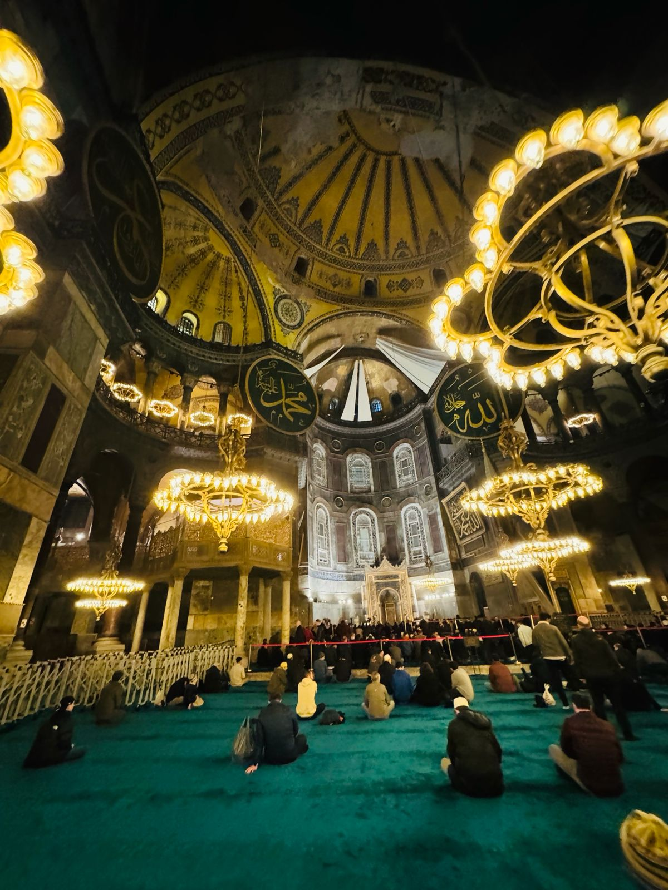

They say you don't really know someone until you've travelled with them. Different time zones, no sleep, things going wrong, decisions to make at 6am with zero coffee in your system — that's when the real person shows up. So when Dillon and I planned our very first trip together (before we were married, no less), I only half-joked on the vlog that this one could be make-or-break. Nine days across Turkey, the two of us, figuring out if we actually travel well together or if we'd be quietly plotting each other's disappearance by day three.
Spoiler: we made it. More on that at the end. First, the trip.
On this page
Table of contents
Arrival
Getting there (two flights, one meeting point)
This one had a slightly romantic logistics setup. I flew in from London, Dillon flew in from Bangalore, and we met in Istanbul — both landing into the same city from opposite ends of the world to start our first proper adventure as a couple. I won't lie, there's something quite cinematic about it.
We arrived early in the morning to a grey, drizzly Istanbul — and got our first taste of Turkish hospitality almost immediately. We rocked up to the hotel far too early, fully expecting to dump our bags and wander off for hours. Instead, the front desk said, "Your room isn't ready yet — but please, have breakfast while you wait." We assumed it'd quietly appear on the final bill. It didn't. It was genuinely complimentary, just because we'd arrived early. And the moment the room was cleaned, they checked us in ahead of time anyway. Small thing, but it set the tone — the warmth we got in Turkey was a recurring theme, and a lovely one.

City start
Istanbul (round one) — big, busy, brilliant
Istanbul is a lot, in the best way. Crowded, sprawling, endless things to do, and genuinely unlike anywhere else because it sits across two continents — you can stand in Europe and look across the Bosphorus to Asia, all in one city. The food options are everywhere, and the Grand Bazaar is a whole experience in itself — one of the oldest and largest covered markets in the world, and a serious test of your shopping willpower.
We did make it to the Galata Tower on this first leg — though our timing was a bit unlucky, as it was covered in scaffolding for restoration work while we were there. If it had been bare, we'd have come away with much better photos. As it was, we were too busy with the cheesecake to care.
And that cheesecake deserves its own moment. Right in front of the tower is Viyana Kahvesi Galata, home to what I'd call the most infamous San Sebastian cheesecake in Istanbul. It's the creamy, burnt-top Basque kind, and it is outrageously good. Fair warning: this place is permanently rammed. There's a queue no matter what time you turn up, and it always seems to be full — but honestly, it's worth the wait. The cheesecake plus that view of the tower is, in my opinion, a genuine don't-miss in Istanbul.
Our one problem: the weather. It was cold and rainy for our first couple of days, so we didn't get to make the most of it. We did the wander, soaked up the atmosphere, ate well — but kept a few of the big sights (the mosques especially) on a mental list to come back to at the end. Pack layers if you're going in March; it is not warm yet.

Transport notes
Getting around Istanbul
Istanbul is enormous and the traffic is genuinely no joke, so do what we did and lean on public transport — it's cheap, fast, and honestly half the fun. The first thing to sort is an Istanbulkart: a rechargeable tap card you grab from the machines at metro stations, tram stops and ferry terminals. One card covers the metro, trams, buses, funiculars and ferries, and you can even share a single card across a few people — just tap once per person. Top it up at those same machines; fares are tiny compared to taxis, and you get a discount when you transfer between lines within a couple of hours, so hopping around barely costs anything. (Prices change all the time, so just glance at the machine for the current fare rather than trusting any number you read online.)
A few things that made our lives easier:
- The Marmaray is the undersea train line linking the European and Asian sides, and it's ridiculously quick — a few minutes under the Bosphorus versus potentially sitting on a bridge in traffic for an hour. One quirk: on the Marmaray (and the Metrobüs), you tap in and out, because the fare's based on distance.
- The ferries are a must. Yes, locals use them as everyday commuter transport — but gliding across the Bosphorus with a glass of çay in hand, mosques and palaces drifting past, is one of the loveliest cheap things you can do in the whole city. Same Istanbulkart, same tap.
- Istanbul is hilly. The little funiculars (like Taksim–Kabataş) save your legs more than you'd expect.
Stick Google Maps or Moovit on your phone for routing, try to dodge rush hour (roughly 7:30–9:30am and 5–7:30pm), and in the old town around Sultanahmet, just walk — it's compact and best on foot.
Taxis are around if you need them, but between the traffic and the occasional creative fare, the card honestly did everything we needed.

Trip highlight
Cappadocia — the absolute highlight (3 days)
If you take one thing from this post: go to Cappadocia. This was the best part of the whole trip, no contest.
Getting there is the one catch — it's far. Istanbul to Cappadocia is around 730km / 450 miles, which is roughly an 8–10 hour drive. We did it as part of the road trip, but if you're short on time, this is the leg to fly instead — there are frequent flights from Istanbul into Kayseri or Nevşehir that take about 1.5 hours and are surprisingly cheap. (There's no direct train, so it's really a choice between driving, an overnight bus, or flying.)
Once you're there, though, it's pure magic. We had three full days and packed them:
- The hot air balloon ride — exactly as ridiculous and breathtaking as the photos promise. Floating up at sunrise over those valleys is a genuine bucket-list moment.
- The Green Tour — a full day covering the bigger sights, including the extraordinary underground cities carved deep into the rock, where whole communities once lived. Wild to walk through.
- The fairy chimneys and cave landscapes — those surreal rock formations Cappadocia is famous for (the whole area is a UNESCO-listed national park), plus the history tucked into every corner.
- Staying in a cave hotel — we slept in an actual carved-stone cave room and it was such a vibe. Do it.

And the food. Oh, the food. Little family-run restaurants near where we stayed, and breakfast buffets that I still think about. Turkish breakfast is a genuine event — fresh fruit, fresh honey, every kind of cheese, olives, cured meats and salami, plus all the croissants and bakery bits you could want. We rolled out of breakfast full every single morning.
The food, the people, the experiences — top to bottom, Cappadocia delivered.

Coastal stop
Antalya — ambushed by a hailstorm (1 day)
We only had a day in Antalya, and Turkey decided to welcome us with a full-blown hailstorm. Not even slightly what we'd packed for.
We made the best of it and explored the Roman ruins in the old town — the history there is genuinely worth it, hail or no hail. But anything beach-related was off the table; it was far too cold and wild for boats, swimming, or any of the coastal stuff Antalya is actually known for. So this one goes firmly in the "we have to come back" column — ideally in summer, when we can do the yacht-and-boat-trip, lazy-day-by-the-sea version of Antalya properly. Next time.

Cotton Castle
Pamukkale — the Cotton Castle
From Antalya we headed to Pamukkale, which translates to "Cotton Castle" in Turkish — and the name is perfect. It's a hillside of brilliant white travertine terraces, formed over thousands of years by mineral-rich thermal spring water cascading down and hardening into these surreal limestone pools. From a distance it genuinely looks like snow or cotton draped over the landscape. The whole site, together with the ancient Greco-Roman city of Hierapolis sitting right on top of it, is a UNESCO World Heritage Site.
They do hot air balloon rides here too, but we gave it a miss — we'd already had our Cappadocia balloon moment and didn't need to top it. Instead, we found a spot up at one of the higher viewpoints and just sat there, watching the sun go down over the terraces. Absolutely gorgeous, one of those quiet, didn't-say-much, didn't-need-to moments. And as with everywhere in Turkey, the Roman and Greek ruins layered around the site add a whole extra dimension if you're into history.

Closing the loop
Istanbul (round two) — finishing what we started
We looped back to Istanbul for the final stretch and ticked off everything the rain had stolen from us at the start — mostly the stunning mosques we hadn't managed earlier. It was the perfect way to close the loop: the city that greeted us with grey skies and complimentary breakfast sending us off properly this time.

Need to know
The practical bits
| When we went | March 2024 — shoulder season, so cold, wet, and occasionally hailing. Beautiful, but not beach weather. |
|---|---|
| Route | Istanbul → Cappadocia → Antalya → Pamukkale → back to Istanbul, then home |
| Trip length | Just over a week (Istanbul gets two bites — start and finish; Cappadocia deserves 3 days) |
| Getting around | In Istanbul, skip the car entirely — grab an Istanbulkart and use the metro, tram, ferries and Marmaray (see the Istanbul section for the full how-to). Everywhere else, a rental car for the road-trip legs. Traffic and parking are fine — not amazing, not terrible. |
| The long haul | Istanbul–Cappadocia is ~730km / 8–10 hrs by road. Driving is part of the adventure, but overnight buses and (much faster) 1.5hr flights are there if you'd rather not. |
| Budget | Reasonable overall — Turkey didn't break the bank. Domestic flights are cheap, public transport in Istanbul is cheap, and food is great value. |
| Food | Eat all of it. The breakfast buffets alone are worth the flight. |
| Hospitality | Genuinely warm and welcoming — one of our favourite things about the whole country. |
Real talk
Honest thoughts
Turkey was the perfect first-trip-together country, and not just because it's gorgeous. It throws a bit of everything at you — a sprawling city, otherworldly landscapes, ancient ruins, long drives, and weather that does whatever it likes — and somehow we came out the other side having had the best time, not a single proper argument, and a clear answer to my make-or-break joke.
Because here's the thing we actually learned: when it comes to travel, our heads are in exactly the same place. We like the same things, we move at the same pace, we problem-solve well together when a hailstorm shows up uninvited. It was my third time travelling internationally but my first time travelling with Dillon — and it turned out we were the same kind of traveller. That trip is genuinely where a lot of this — the two of us, this blog, the life we're building around seeing the world — started.
Would we go back? In a heartbeat. Especially Antalya, where the sea is still waiting for us.
Before you book
Tips if you're planning your own Turkey trip
- Don't underestimate the distances — Istanbul to Cappadocia is a serious haul. Drive it for the adventure, or fly it (1.5 hrs, cheap) to save your days.
- Cappadocia is the headliner — give it at least 3 days, do the sunrise balloon, and stay in a cave hotel.
- Use public transport in Istanbul — grab a transport card; the car only earns its keep outside the city.
- Go hungry to breakfast — Turkish breakfast buffets are a sport, and you'll want to compete.
- Layer up in spring — March looks lovely in photos and feels like winter in person. We got rained on and hailed on.
- Save the beaches for summer — if Antalya's coast is the dream, don't go in early spring like we did.
- Lean into the hospitality — some of our warmest travel memories are the small, unexpected kindnesses here. Say yes to them.